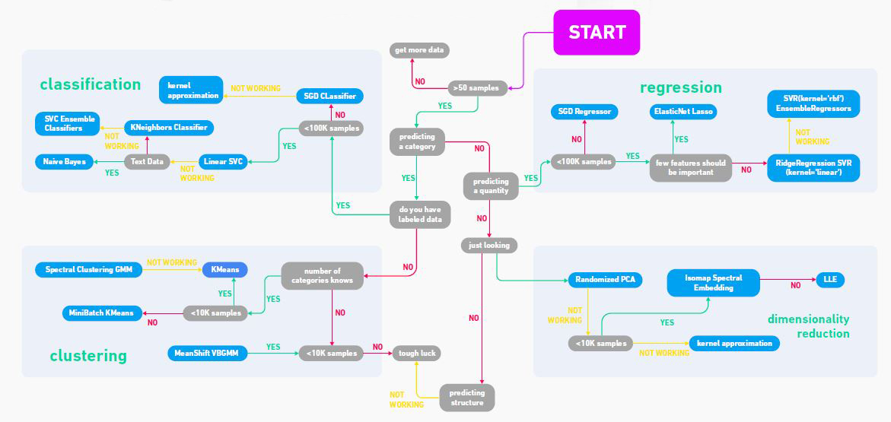

K-Means clustering
Contents
K-Means clustering¶
Announcements¶
No in-class quiz this week. No homework due this week.
Videos and video quizzes are posted. Due Thursday.
Homework for next Tuesday (Week 6) is posted. You will have time to work on the homework during discussion section tomorrow.
Midterms returned today. The median score was high, 34.5/40 (good job!), so there won’t be any curving.
Midterm solutions are in the “Course Updates” section on the Canvas homepage.
If you see a clear mistake in my grading (e.g., I added the points wrong), you must leave the exam with me today, together with a note explaining what the mistake is.
Brief overview of Machine Learning¶
Machine Learning is roughly divided into two big categories:
Supervised Learning
Unsupervised Learning In supervised learning, there is some “correct” value that you are aiming to calculate; in other words, in supervised learning, at least some of the data includes correct labels. In unsupervised learning, the key difference is that the data does not include labels.
Supervised learning is itself divided into two big categories:
Regression, in which we are seeking to compute some numerical value.
Classification, in which we are seeking to assign discrete labels.
Examples of regression problems in supervised learning:
Predict the price of a house.
Predict the temperature at a certain time.
Predict the number of clicks on an ad.
Examples of classification problems in supervised learning:
Identify a species of penguin from some measurements.
Determine if an email is spam or not.
Identify someone from a photograph.
The most famous example of unsupervised learning is clustering.
Here is a flowchart image I downloaded from the website GeeksforGeeks. Don’t take it too literally, but it nicely illustrates some different categories of machine learning.

Review of StandardScaler¶
import seaborn as sns
When we import the Spotify dataset, we always specify na_values=" ". We don’t have to do that when importing a dataset from Seaborn.
df = sns.load_dataset("iris")
df.isna()
| sepal_length | sepal_width | petal_length | petal_width | species | |
|---|---|---|---|---|---|
| 0 | False | False | False | False | False |
| 1 | False | False | False | False | False |
| 2 | False | False | False | False | False |
| 3 | False | False | False | False | False |
| 4 | False | False | False | False | False |
| ... | ... | ... | ... | ... | ... |
| 145 | False | False | False | False | False |
| 146 | False | False | False | False | False |
| 147 | False | False | False | False | False |
| 148 | False | False | False | False | False |
| 149 | False | False | False | False | False |
150 rows × 5 columns
df.isna().any(axis=0)
sepal_length False
sepal_width False
petal_length False
petal_width False
species False
dtype: bool
Notice that the default value of axis is 0, so we could have not specified axis=0 and gotten the same result.
help(df.any)
Help on method any in module pandas.core.generic:
any(axis=0, bool_only=None, skipna=True, level=None, **kwargs) method of pandas.core.frame.DataFrame instance
Return whether any element is True, potentially over an axis.
Returns False unless there is at least one element within a series or
along a Dataframe axis that is True or equivalent (e.g. non-zero or
non-empty).
Parameters
----------
axis : {0 or 'index', 1 or 'columns', None}, default 0
Indicate which axis or axes should be reduced.
* 0 / 'index' : reduce the index, return a Series whose index is the
original column labels.
* 1 / 'columns' : reduce the columns, return a Series whose index is the
original index.
* None : reduce all axes, return a scalar.
bool_only : bool, default None
Include only boolean columns. If None, will attempt to use everything,
then use only boolean data. Not implemented for Series.
skipna : bool, default True
Exclude NA/null values. If the entire row/column is NA and skipna is
True, then the result will be False, as for an empty row/column.
If skipna is False, then NA are treated as True, because these are not
equal to zero.
level : int or level name, default None
If the axis is a MultiIndex (hierarchical), count along a
particular level, collapsing into a Series.
**kwargs : any, default None
Additional keywords have no effect but might be accepted for
compatibility with NumPy.
Returns
-------
Series or DataFrame
If level is specified, then, DataFrame is returned; otherwise, Series
is returned.
See Also
--------
numpy.any : Numpy version of this method.
Series.any : Return whether any element is True.
Series.all : Return whether all elements are True.
DataFrame.any : Return whether any element is True over requested axis.
DataFrame.all : Return whether all elements are True over requested axis.
Examples
--------
**Series**
For Series input, the output is a scalar indicating whether any element
is True.
>>> pd.Series([False, False]).any()
False
>>> pd.Series([True, False]).any()
True
>>> pd.Series([], dtype="float64").any()
False
>>> pd.Series([np.nan]).any()
False
>>> pd.Series([np.nan]).any(skipna=False)
True
**DataFrame**
Whether each column contains at least one True element (the default).
>>> df = pd.DataFrame({"A": [1, 2], "B": [0, 2], "C": [0, 0]})
>>> df
A B C
0 1 0 0
1 2 2 0
>>> df.any()
A True
B True
C False
dtype: bool
Aggregating over the columns.
>>> df = pd.DataFrame({"A": [True, False], "B": [1, 2]})
>>> df
A B
0 True 1
1 False 2
>>> df.any(axis='columns')
0 True
1 True
dtype: bool
>>> df = pd.DataFrame({"A": [True, False], "B": [1, 0]})
>>> df
A B
0 True 1
1 False 0
>>> df.any(axis='columns')
0 True
1 False
dtype: bool
Aggregating over the entire DataFrame with ``axis=None``.
>>> df.any(axis=None)
True
`any` for an empty DataFrame is an empty Series.
>>> pd.DataFrame([]).any()
Series([], dtype: bool)
df.isna().any()
sepal_length False
sepal_width False
petal_length False
petal_width False
species False
dtype: bool
Here is a fast way to see if there are any missing values.
df.isna().any().any()
False
2+2
4
penguin = sns.load_dataset("penguins")
penguin.isna().any(axis=1)
0 False
1 False
2 False
3 True
4 False
...
339 True
340 False
341 False
342 False
343 False
Length: 344, dtype: bool
penguin.loc[3]
species Adelie
island Torgersen
bill_length_mm NaN
bill_depth_mm NaN
flipper_length_mm NaN
body_mass_g NaN
sex NaN
Name: 3, dtype: object
penguin.loc[3,"bill_depth_mm"]
nan
type(penguin.loc[3,"bill_depth_mm"])
numpy.float64
import numpy as np
np.isnan(penguin.loc[3,"bill_depth_mm"])
True
penguin.loc[3,"bill_depth_mm"] == np.nan
False
Potential for confusion: np.nan is considered by Python to not equal itself.
np.nan == np.nan
False
df
| sepal_length | sepal_width | petal_length | petal_width | species | |
|---|---|---|---|---|---|
| 0 | 5.1 | 3.5 | 1.4 | 0.2 | setosa |
| 1 | 4.9 | 3.0 | 1.4 | 0.2 | setosa |
| 2 | 4.7 | 3.2 | 1.3 | 0.2 | setosa |
| 3 | 4.6 | 3.1 | 1.5 | 0.2 | setosa |
| 4 | 5.0 | 3.6 | 1.4 | 0.2 | setosa |
| ... | ... | ... | ... | ... | ... |
| 145 | 6.7 | 3.0 | 5.2 | 2.3 | virginica |
| 146 | 6.3 | 2.5 | 5.0 | 1.9 | virginica |
| 147 | 6.5 | 3.0 | 5.2 | 2.0 | virginica |
| 148 | 6.2 | 3.4 | 5.4 | 2.3 | virginica |
| 149 | 5.9 | 3.0 | 5.1 | 1.8 | virginica |
150 rows × 5 columns
Here is the general routine for working with scikit-learn.
Import
Instantiate (create an object)
fittransformorpredict
# import
from sklearn.preprocessing import StandardScaler
# instantiate
scaler = StandardScaler()
type(scaler)
sklearn.preprocessing._data.StandardScaler
The following raises an error because df has a non-numeric column called “species”.
scaler.fit(df)
---------------------------------------------------------------------------
ValueError Traceback (most recent call last)
/var/folders/8j/gshrlmtn7dg4qtztj4d4t_w40000gn/T/ipykernel_9209/3535945743.py in <module>
----> 1 scaler.fit(df)
~/miniconda3/envs/math10s22/lib/python3.7/site-packages/sklearn/preprocessing/_data.py in fit(self, X, y, sample_weight)
804 # Reset internal state before fitting
805 self._reset()
--> 806 return self.partial_fit(X, y, sample_weight)
807
808 def partial_fit(self, X, y=None, sample_weight=None):
~/miniconda3/envs/math10s22/lib/python3.7/site-packages/sklearn/preprocessing/_data.py in partial_fit(self, X, y, sample_weight)
845 dtype=FLOAT_DTYPES,
846 force_all_finite="allow-nan",
--> 847 reset=first_call,
848 )
849 n_features = X.shape[1]
~/miniconda3/envs/math10s22/lib/python3.7/site-packages/sklearn/base.py in _validate_data(self, X, y, reset, validate_separately, **check_params)
564 raise ValueError("Validation should be done on X, y or both.")
565 elif not no_val_X and no_val_y:
--> 566 X = check_array(X, **check_params)
567 out = X
568 elif no_val_X and not no_val_y:
~/miniconda3/envs/math10s22/lib/python3.7/site-packages/sklearn/utils/validation.py in check_array(array, accept_sparse, accept_large_sparse, dtype, order, copy, force_all_finite, ensure_2d, allow_nd, ensure_min_samples, ensure_min_features, estimator)
744 array = array.astype(dtype, casting="unsafe", copy=False)
745 else:
--> 746 array = np.asarray(array, order=order, dtype=dtype)
747 except ComplexWarning as complex_warning:
748 raise ValueError(
~/miniconda3/envs/math10s22/lib/python3.7/site-packages/pandas/core/generic.py in __array__(self, dtype)
1991
1992 def __array__(self, dtype: NpDtype | None = None) -> np.ndarray:
-> 1993 return np.asarray(self._values, dtype=dtype)
1994
1995 def __array_wrap__(
ValueError: could not convert string to float: 'setosa'
df.columns
Index(['sepal_length', 'sepal_width', 'petal_length', 'petal_width',
'species'],
dtype='object')
numcols = [c for c in df.columns if c != "species"]
[c for c in df.columns if not (c == "species")]
['sepal_length', 'sepal_width', 'petal_length', 'petal_width']
numcols
['sepal_length', 'sepal_width', 'petal_length', 'petal_width']
# fit
scaler.fit(df[numcols])
StandardScaler()
# transform
df[numcols] = scaler.transform(df[numcols])
df
| sepal_length | sepal_width | petal_length | petal_width | species | |
|---|---|---|---|---|---|
| 0 | -0.900681 | 1.019004 | -1.340227 | -1.315444 | setosa |
| 1 | -1.143017 | -0.131979 | -1.340227 | -1.315444 | setosa |
| 2 | -1.385353 | 0.328414 | -1.397064 | -1.315444 | setosa |
| 3 | -1.506521 | 0.098217 | -1.283389 | -1.315444 | setosa |
| 4 | -1.021849 | 1.249201 | -1.340227 | -1.315444 | setosa |
| ... | ... | ... | ... | ... | ... |
| 145 | 1.038005 | -0.131979 | 0.819596 | 1.448832 | virginica |
| 146 | 0.553333 | -1.282963 | 0.705921 | 0.922303 | virginica |
| 147 | 0.795669 | -0.131979 | 0.819596 | 1.053935 | virginica |
| 148 | 0.432165 | 0.788808 | 0.933271 | 1.448832 | virginica |
| 149 | 0.068662 | -0.131979 | 0.762758 | 0.790671 | virginica |
150 rows × 5 columns
df.mean(axis=0)
/Users/christopherdavis/miniconda3/envs/math10s22/lib/python3.7/site-packages/ipykernel_launcher.py:1: FutureWarning: Dropping of nuisance columns in DataFrame reductions (with 'numeric_only=None') is deprecated; in a future version this will raise TypeError. Select only valid columns before calling the reduction.
"""Entry point for launching an IPython kernel.
sepal_length -4.736952e-16
sepal_width -7.815970e-16
petal_length -4.263256e-16
petal_width -4.736952e-16
dtype: float64
df.std(axis=0)
/Users/christopherdavis/miniconda3/envs/math10s22/lib/python3.7/site-packages/ipykernel_launcher.py:1: FutureWarning: Dropping of nuisance columns in DataFrame reductions (with 'numeric_only=None') is deprecated; in a future version this will raise TypeError. Select only valid columns before calling the reduction.
"""Entry point for launching an IPython kernel.
sepal_length 1.00335
sepal_width 1.00335
petal_length 1.00335
petal_width 1.00335
dtype: float64
K-Means clustering¶
The library scikit-learn uses a very consistent syntax, so what we do with KMeans should look very similar to what we did with StandardScaler.
# import
from sklearn.cluster import KMeans
# instantiate/create
kmeans = KMeans()
type(kmeans)
sklearn.cluster._kmeans.KMeans
# fit
kmeans.fit(df[numcols])
KMeans()
Here we put the predicted clusters into a new column called “cluster”.
# predict
df["cluster"] = kmeans.predict(df[numcols])
df
| sepal_length | sepal_width | petal_length | petal_width | species | cluster | |
|---|---|---|---|---|---|---|
| 0 | -0.900681 | 1.019004 | -1.340227 | -1.315444 | setosa | 1 |
| 1 | -1.143017 | -0.131979 | -1.340227 | -1.315444 | setosa | 5 |
| 2 | -1.385353 | 0.328414 | -1.397064 | -1.315444 | setosa | 5 |
| 3 | -1.506521 | 0.098217 | -1.283389 | -1.315444 | setosa | 5 |
| 4 | -1.021849 | 1.249201 | -1.340227 | -1.315444 | setosa | 1 |
| ... | ... | ... | ... | ... | ... | ... |
| 145 | 1.038005 | -0.131979 | 0.819596 | 1.448832 | virginica | 3 |
| 146 | 0.553333 | -1.282963 | 0.705921 | 0.922303 | virginica | 4 |
| 147 | 0.795669 | -0.131979 | 0.819596 | 1.053935 | virginica | 3 |
| 148 | 0.432165 | 0.788808 | 0.933271 | 1.448832 | virginica | 3 |
| 149 | 0.068662 | -0.131979 | 0.762758 | 0.790671 | virginica | 4 |
150 rows × 6 columns
import altair as alt
numcols
['sepal_length', 'sepal_width', 'petal_length', 'petal_width']
alt.Chart(df).mark_circle().encode(
x = "sepal_length",
y = "petal_length",
color = "cluster:N"
)
Usually we will specify the number of clusters. If you don’t specify, then it will use 8 as the default value.
help(KMeans)
Help on class KMeans in module sklearn.cluster._kmeans:
class KMeans(sklearn.base.TransformerMixin, sklearn.base.ClusterMixin, sklearn.base.BaseEstimator)
| KMeans(n_clusters=8, *, init='k-means++', n_init=10, max_iter=300, tol=0.0001, verbose=0, random_state=None, copy_x=True, algorithm='auto')
|
| K-Means clustering.
|
| Read more in the :ref:`User Guide <k_means>`.
|
| Parameters
| ----------
|
| n_clusters : int, default=8
| The number of clusters to form as well as the number of
| centroids to generate.
|
| init : {'k-means++', 'random'}, callable or array-like of shape (n_clusters, n_features), default='k-means++'
| Method for initialization:
|
| 'k-means++' : selects initial cluster centers for k-mean
| clustering in a smart way to speed up convergence. See section
| Notes in k_init for more details.
|
| 'random': choose `n_clusters` observations (rows) at random from data
| for the initial centroids.
|
| If an array is passed, it should be of shape (n_clusters, n_features)
| and gives the initial centers.
|
| If a callable is passed, it should take arguments X, n_clusters and a
| random state and return an initialization.
|
| n_init : int, default=10
| Number of time the k-means algorithm will be run with different
| centroid seeds. The final results will be the best output of
| n_init consecutive runs in terms of inertia.
|
| max_iter : int, default=300
| Maximum number of iterations of the k-means algorithm for a
| single run.
|
| tol : float, default=1e-4
| Relative tolerance with regards to Frobenius norm of the difference
| in the cluster centers of two consecutive iterations to declare
| convergence.
|
| verbose : int, default=0
| Verbosity mode.
|
| random_state : int, RandomState instance or None, default=None
| Determines random number generation for centroid initialization. Use
| an int to make the randomness deterministic.
| See :term:`Glossary <random_state>`.
|
| copy_x : bool, default=True
| When pre-computing distances it is more numerically accurate to center
| the data first. If copy_x is True (default), then the original data is
| not modified. If False, the original data is modified, and put back
| before the function returns, but small numerical differences may be
| introduced by subtracting and then adding the data mean. Note that if
| the original data is not C-contiguous, a copy will be made even if
| copy_x is False. If the original data is sparse, but not in CSR format,
| a copy will be made even if copy_x is False.
|
| algorithm : {"auto", "full", "elkan"}, default="auto"
| K-means algorithm to use. The classical EM-style algorithm is "full".
| The "elkan" variation is more efficient on data with well-defined
| clusters, by using the triangle inequality. However it's more memory
| intensive due to the allocation of an extra array of shape
| (n_samples, n_clusters).
|
| For now "auto" (kept for backward compatibility) chooses "elkan" but it
| might change in the future for a better heuristic.
|
| .. versionchanged:: 0.18
| Added Elkan algorithm
|
| Attributes
| ----------
| cluster_centers_ : ndarray of shape (n_clusters, n_features)
| Coordinates of cluster centers. If the algorithm stops before fully
| converging (see ``tol`` and ``max_iter``), these will not be
| consistent with ``labels_``.
|
| labels_ : ndarray of shape (n_samples,)
| Labels of each point
|
| inertia_ : float
| Sum of squared distances of samples to their closest cluster center,
| weighted by the sample weights if provided.
|
| n_iter_ : int
| Number of iterations run.
|
| n_features_in_ : int
| Number of features seen during :term:`fit`.
|
| .. versionadded:: 0.24
|
| feature_names_in_ : ndarray of shape (`n_features_in_`,)
| Names of features seen during :term:`fit`. Defined only when `X`
| has feature names that are all strings.
|
| .. versionadded:: 1.0
|
| See Also
| --------
| MiniBatchKMeans : Alternative online implementation that does incremental
| updates of the centers positions using mini-batches.
| For large scale learning (say n_samples > 10k) MiniBatchKMeans is
| probably much faster than the default batch implementation.
|
| Notes
| -----
| The k-means problem is solved using either Lloyd's or Elkan's algorithm.
|
| The average complexity is given by O(k n T), where n is the number of
| samples and T is the number of iteration.
|
| The worst case complexity is given by O(n^(k+2/p)) with
| n = n_samples, p = n_features. (D. Arthur and S. Vassilvitskii,
| 'How slow is the k-means method?' SoCG2006)
|
| In practice, the k-means algorithm is very fast (one of the fastest
| clustering algorithms available), but it falls in local minima. That's why
| it can be useful to restart it several times.
|
| If the algorithm stops before fully converging (because of ``tol`` or
| ``max_iter``), ``labels_`` and ``cluster_centers_`` will not be consistent,
| i.e. the ``cluster_centers_`` will not be the means of the points in each
| cluster. Also, the estimator will reassign ``labels_`` after the last
| iteration to make ``labels_`` consistent with ``predict`` on the training
| set.
|
| Examples
| --------
|
| >>> from sklearn.cluster import KMeans
| >>> import numpy as np
| >>> X = np.array([[1, 2], [1, 4], [1, 0],
| ... [10, 2], [10, 4], [10, 0]])
| >>> kmeans = KMeans(n_clusters=2, random_state=0).fit(X)
| >>> kmeans.labels_
| array([1, 1, 1, 0, 0, 0], dtype=int32)
| >>> kmeans.predict([[0, 0], [12, 3]])
| array([1, 0], dtype=int32)
| >>> kmeans.cluster_centers_
| array([[10., 2.],
| [ 1., 2.]])
|
| Method resolution order:
| KMeans
| sklearn.base.TransformerMixin
| sklearn.base.ClusterMixin
| sklearn.base.BaseEstimator
| builtins.object
|
| Methods defined here:
|
| __init__(self, n_clusters=8, *, init='k-means++', n_init=10, max_iter=300, tol=0.0001, verbose=0, random_state=None, copy_x=True, algorithm='auto')
| Initialize self. See help(type(self)) for accurate signature.
|
| fit(self, X, y=None, sample_weight=None)
| Compute k-means clustering.
|
| Parameters
| ----------
| X : {array-like, sparse matrix} of shape (n_samples, n_features)
| Training instances to cluster. It must be noted that the data
| will be converted to C ordering, which will cause a memory
| copy if the given data is not C-contiguous.
| If a sparse matrix is passed, a copy will be made if it's not in
| CSR format.
|
| y : Ignored
| Not used, present here for API consistency by convention.
|
| sample_weight : array-like of shape (n_samples,), default=None
| The weights for each observation in X. If None, all observations
| are assigned equal weight.
|
| .. versionadded:: 0.20
|
| Returns
| -------
| self : object
| Fitted estimator.
|
| fit_predict(self, X, y=None, sample_weight=None)
| Compute cluster centers and predict cluster index for each sample.
|
| Convenience method; equivalent to calling fit(X) followed by
| predict(X).
|
| Parameters
| ----------
| X : {array-like, sparse matrix} of shape (n_samples, n_features)
| New data to transform.
|
| y : Ignored
| Not used, present here for API consistency by convention.
|
| sample_weight : array-like of shape (n_samples,), default=None
| The weights for each observation in X. If None, all observations
| are assigned equal weight.
|
| Returns
| -------
| labels : ndarray of shape (n_samples,)
| Index of the cluster each sample belongs to.
|
| fit_transform(self, X, y=None, sample_weight=None)
| Compute clustering and transform X to cluster-distance space.
|
| Equivalent to fit(X).transform(X), but more efficiently implemented.
|
| Parameters
| ----------
| X : {array-like, sparse matrix} of shape (n_samples, n_features)
| New data to transform.
|
| y : Ignored
| Not used, present here for API consistency by convention.
|
| sample_weight : array-like of shape (n_samples,), default=None
| The weights for each observation in X. If None, all observations
| are assigned equal weight.
|
| Returns
| -------
| X_new : ndarray of shape (n_samples, n_clusters)
| X transformed in the new space.
|
| predict(self, X, sample_weight=None)
| Predict the closest cluster each sample in X belongs to.
|
| In the vector quantization literature, `cluster_centers_` is called
| the code book and each value returned by `predict` is the index of
| the closest code in the code book.
|
| Parameters
| ----------
| X : {array-like, sparse matrix} of shape (n_samples, n_features)
| New data to predict.
|
| sample_weight : array-like of shape (n_samples,), default=None
| The weights for each observation in X. If None, all observations
| are assigned equal weight.
|
| Returns
| -------
| labels : ndarray of shape (n_samples,)
| Index of the cluster each sample belongs to.
|
| score(self, X, y=None, sample_weight=None)
| Opposite of the value of X on the K-means objective.
|
| Parameters
| ----------
| X : {array-like, sparse matrix} of shape (n_samples, n_features)
| New data.
|
| y : Ignored
| Not used, present here for API consistency by convention.
|
| sample_weight : array-like of shape (n_samples,), default=None
| The weights for each observation in X. If None, all observations
| are assigned equal weight.
|
| Returns
| -------
| score : float
| Opposite of the value of X on the K-means objective.
|
| transform(self, X)
| Transform X to a cluster-distance space.
|
| In the new space, each dimension is the distance to the cluster
| centers. Note that even if X is sparse, the array returned by
| `transform` will typically be dense.
|
| Parameters
| ----------
| X : {array-like, sparse matrix} of shape (n_samples, n_features)
| New data to transform.
|
| Returns
| -------
| X_new : ndarray of shape (n_samples, n_clusters)
| X transformed in the new space.
|
| ----------------------------------------------------------------------
| Data descriptors inherited from sklearn.base.TransformerMixin:
|
| __dict__
| dictionary for instance variables (if defined)
|
| __weakref__
| list of weak references to the object (if defined)
|
| ----------------------------------------------------------------------
| Methods inherited from sklearn.base.BaseEstimator:
|
| __getstate__(self)
|
| __repr__(self, N_CHAR_MAX=700)
| Return repr(self).
|
| __setstate__(self, state)
|
| get_params(self, deep=True)
| Get parameters for this estimator.
|
| Parameters
| ----------
| deep : bool, default=True
| If True, will return the parameters for this estimator and
| contained subobjects that are estimators.
|
| Returns
| -------
| params : dict
| Parameter names mapped to their values.
|
| set_params(self, **params)
| Set the parameters of this estimator.
|
| The method works on simple estimators as well as on nested objects
| (such as :class:`~sklearn.pipeline.Pipeline`). The latter have
| parameters of the form ``<component>__<parameter>`` so that it's
| possible to update each component of a nested object.
|
| Parameters
| ----------
| **params : dict
| Estimator parameters.
|
| Returns
| -------
| self : estimator instance
| Estimator instance.
Here we create a new KMeans object, and specify that it should use 2 clusters.
kmeans2 = KMeans(n_clusters=2)
kmeans2.fit(df[numcols])
KMeans(n_clusters=2)
Here we save it as a new column. (In lecture, I called this “pred2” instead of “cluster2”.)
df["cluster2"] = kmeans2.predict(df[numcols])
df
| sepal_length | sepal_width | petal_length | petal_width | species | cluster | cluster2 | |
|---|---|---|---|---|---|---|---|
| 0 | -0.900681 | 1.019004 | -1.340227 | -1.315444 | setosa | 1 | 0 |
| 1 | -1.143017 | -0.131979 | -1.340227 | -1.315444 | setosa | 5 | 0 |
| 2 | -1.385353 | 0.328414 | -1.397064 | -1.315444 | setosa | 5 | 0 |
| 3 | -1.506521 | 0.098217 | -1.283389 | -1.315444 | setosa | 5 | 0 |
| 4 | -1.021849 | 1.249201 | -1.340227 | -1.315444 | setosa | 1 | 0 |
| ... | ... | ... | ... | ... | ... | ... | ... |
| 145 | 1.038005 | -0.131979 | 0.819596 | 1.448832 | virginica | 3 | 1 |
| 146 | 0.553333 | -1.282963 | 0.705921 | 0.922303 | virginica | 4 | 1 |
| 147 | 0.795669 | -0.131979 | 0.819596 | 1.053935 | virginica | 3 | 1 |
| 148 | 0.432165 | 0.788808 | 0.933271 | 1.448832 | virginica | 3 | 1 |
| 149 | 0.068662 | -0.131979 | 0.762758 | 0.790671 | virginica | 4 | 1 |
150 rows × 7 columns
alt.Chart(df).mark_circle().encode(
x = "sepal_length",
y = "petal_length",
color = "cluster2:N"
)
numcols
['sepal_length', 'sepal_width', 'petal_length', 'petal_width']
chart_list = []
for c in numcols:
chart = alt.Chart(df).mark_circle().encode(
x = "sepal_length",
y = c,
color = "cluster2:N"
)
chart_list.append(chart)
An example of list unpacking.
alt.vconcat(*chart_list)